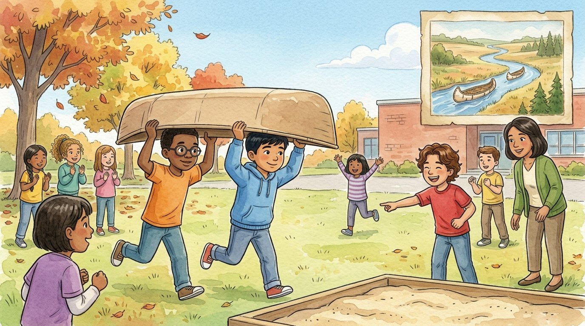

Grade 4 · Social studies · SS.4.H.1 · SS.4.H.3
Carry the canoe
A story about the 1673 journey of Marquette and Jolliet and the peoples who showed them the way.
Social studies words you will learn
Tap a green word to see what it means.
The story
The class went on a field trip to a forest preserve in Lyons, just outside Chicago. Next to a quiet creek, a sign told about two who passed through more than 350 years ago. "This is where a story about canoes, rivers and trade begins," said Ms. Rivera.
In 1673, the explorer Louis Jolliet and a priest named Jacques Marquette set out from the north with five other men in two bark canoes. They came from New France, a French in what is now Canada.
The government of New France wanted to know where the great Mississippi River led. The travelers paddled across lakes and rivers until they found it, then followed it south for weeks. When they understood that the river flowed into the Gulf of Mexico, they decided to turn back.
"How did they know which way to go?" Daniel asked. "Native peoples had known these rivers for a very, very long time," Ms. Rivera answered. "The Illinois peoples welcomed the travelers and showed them a shorter home, up the Illinois River and the Des Plaines River." Marquette spoke several Native languages, which helped everyone understand each other.
But between the Des Plaines River and the Chicago River there was a stretch of land. They had to lift the canoes out of the water and carry them on foot. That's called a . "It happened right here!" said Elías, looking at the creek in a whole new way.
Back at school, the class held a portage race in the schoolyard with cardboard canoes. Daniel and Israel ran with theirs over their heads, couldn't see a thing, and ended up in the sandbox. "Now I get why they wanted a canal," said Israel, brushing off the sand.
Jolliet thought that if a were dug across that stretch of land, boats could travel from Lake Michigan to the Mississippi River without ever leaving the water. It took about 175 years for that idea to come true.
The journey opened the way for French traders, who exchanged metal pots, tools and cloth for beaver furs. That changed life for many Native peoples. "To the French, this was a new place," Ms. Rivera said. "To the Native peoples, it had always been home. Each group saw it from its own ."
Elías wrote in his notebook: "Exploring is easier with a good guide... and without a canoe covering your eyes."
Glossary
- explorer
- A person who travels to unfamiliar places to learn about them and make maps.
- colony
- A land ruled by a country that is far away.
- route
- The way you follow to get from one place to another.
- portage
- Carrying a canoe over land from one river or lake to another.
- canal
- A waterway that people dig so boats can pass through.
- trade
- Buying, selling or exchanging things with other people or other nations.
- perspective
- The way a person or a group sees something, based on their own life and history.
Questions
Choose the correct answer. If you make a mistake, the story shows you where the answer is.
-
Question A. Who traveled down the Mississippi in 1673?
In 1673, Louis Jolliet and Jacques Marquette traveled with five other men.
-
Question B. What did the government of New France want to know?
The government of New France wanted to know where the Mississippi River led.
-
Question C. Who showed the travelers a shorter route home?
The Illinois peoples showed them a shorter route up the Illinois and Des Plaines rivers.
-
Question D. What is a portage?
A portage is lifting the canoe out of the water and carrying it over land to another river.
-
Question E. What idea did Jolliet have?
Jolliet thought a canal could let boats go from Lake Michigan to the Mississippi without leaving the water.
Challenge: explain your thinking
Two points of view
Ms. Rivera said each group saw the land from its own perspective. Write one sentence the French travelers might have used to describe the Illinois River, and one sentence an Illinois guide might have used. Why are they different?
Answer in your notebook or talk it over with a classmate. Use evidence from the story.
Check your thinking
French travelers: "This river could be a new route to the Mississippi and a place to trade for furs." Illinois guide: "This is the river we have always used to travel, fish and trade, and we know the shortest way." They are different because the land was new to the French, but it had always been home to the Native peoples.